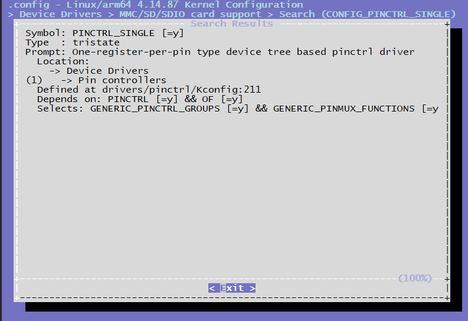

4.3.6. Pinctrl调试指南
4.3.6.1. 前言
X3 Pinctrl使用Linux Kernel主线代码的pinctl-single作为驱动，主要通过配置DTS来实现pinctrl功能。
4.3.6.2. 管脚查询
IO管脚的复用和配置可以查阅《PL-2500-3-X3 PIN SW Reg-V1.2.xls》。
在 《PL-2500-3-X3 PIN SW Reg-V1.2.xls》可以比较直观的查询到管脚的上电默认状态、复用、驱动能力、上下拉、施密特触发配置。
驱动代码
drivers/pinctrl/pinctrl-single.c # pinctrl 驱动代码源文件
include/linux/platform_data/pinctrl-single.h # pinctrl 驱动代码头文件
内核配置
CONFIG_PINCTRL_SINGLE

Pinctrl的DTS配置
/* arch/arm64/boot/dts/hobot/hobot-pinctrl-xj3.dtsi */
pinctrl: pinctrl@0xA6004000 {
compatible = "pinctrl-single";
reg = <0x0 0xA6004000 0x0 0x200>;
#pinctrl-cells = <1>;
#gpio-range-cells = <0x3>;
pinctrl-single,register-width = <32>;
pinctrl-single,function-mask = <0x3FF>;
/* pin base, nr pins & gpio function */
pinctrl-single,gpio-range = <&range 0 120 3>;
i2c0_func: i2c0_func {
pinctrl-single,pins = <
0x020 (MUX_F0 | DRIVE2_09MA | SCHMITT2_DIS | PULL2_UP)
0x024 (MUX_F0 | DRIVE2_09MA | SCHMITT2_DIS | PULL2_UP)
>;
};
...
}
4.3.6.3. Pinctrl使用
驱动DTS配置
驱动在使用Pinctrl的接口前，需要在DTS里配置相应的pinctrl配置组，当驱动probe的时候，会将”default”对应的这组Pinctrl配置到寄存器里面，而其它组的配置需要在代码里面解析出来，再选择切换使用，以iar为例：
/* arch/arm64/boot/dts/hobot/hobot-xj3.dtsi */
iar: iar@0xA4001000 {
compatible = "hobot,hobot-iar";
reg = <0 0xA4301000 0 0x400>, <0 0xA4355000 0 0x1000>;
clocks = <&iar_pix_clk>, <&iar_ipi_clk>, <&sif_mclk>;
clock-names = "iar_pix_clk","iar_ipi_clk", "sif_mclk";
interrupt-parent = <&gic>;
interrupts = <0 69 4>;
resets = <&rst 0x40 12>;
pinctrl-names = "bt_func", "rgb_func", "rgb_gpio_func", "bt1120_voltage_func";
pinctrl-0 = <&btout_func>;
pinctrl-1 = <&rgb_func>;
pinctrl-2 = <&rgb_gpio_func>;
pinctrl-3 = <&bt1120_1_8v_func>;
disp_panel_reset_pin = <28>;
reset-names = "iar";
status = "disabled";
};
iar pinctrl中引用的配置组在arch/arm64/boot/dts/hobot/hobot-pinctrl-xj3.dtsi中，内容如下：
btout_func: btout_func {
pinctrl-single,pins = <
0x138 (MUX_F0 | DRIVE1_12MA | SCHMITT2_ENA | PULL2_DOWN) /*BT1120_OUT_CLK*/
0x13c (MUX_F0 | DRIVE1_12MA | SCHMITT2_DIS | PULL2_DOWN) /*BT1120_OUT_DAT0*/
0x140 (MUX_F0 | DRIVE1_12MA | SCHMITT2_DIS | PULL2_DOWN)
0x144 (MUX_F0 | DRIVE1_12MA | SCHMITT2_DIS | PULL2_DOWN)
0x148 (MUX_F0 | DRIVE1_12MA | SCHMITT2_DIS | PULL2_DOWN)
0x14c (MUX_F0 | DRIVE1_12MA | SCHMITT2_DIS | PULL2_DOWN)
0x150 (MUX_F0 | DRIVE1_12MA | SCHMITT2_DIS | PULL2_DOWN)
0x154 (MUX_F0 | DRIVE1_12MA | SCHMITT2_DIS | PULL2_DOWN)
0x158 (MUX_F0 | DRIVE1_12MA | SCHMITT2_DIS | PULL2_DOWN) /*BT1120_OUT_DAT7*/
0x15c (MUX_F0 | DRIVE1_12MA | SCHMITT2_DIS | PULL2_DOWN) /*BT1120_OUT_DAT8*/
0x160 (MUX_F0 | DRIVE1_12MA | SCHMITT2_DIS | PULL2_DOWN)
0x164 (MUX_F0 | DRIVE1_12MA | SCHMITT2_DIS | PULL2_DOWN)
0x168 (MUX_F0 | DRIVE1_12MA | SCHMITT2_DIS | PULL2_DOWN)
0x16c (MUX_F0 | DRIVE1_12MA | SCHMITT2_DIS | PULL2_DOWN)
0x170 (MUX_F0 | DRIVE1_12MA | SCHMITT2_DIS | PULL2_DOWN)
0x174 (MUX_F0 | DRIVE1_12MA | SCHMITT2_DIS | PULL2_DOWN)
0x178 (MUX_F0 | DRIVE1_12MA | SCHMITT2_DIS | PULL2_DOWN) /*BT1120_OUT_DAT15*/
>;
};
pinctrl配置组将多个pin配置组合到一起，每个pin的配置包含2列，第一列表示pin脚配置寄存器的偏移地址，值为pin脚号乘以4，例如BT1120_OUT_CLK的Pin脚号为78，因此偏移地址为 78 * 4 = 312 ，转换为16进制就是0x138；第二列表示Pin的功能复用配置 Pin-mux。
Pin-mux配置
X3 每个芯片的Pin脚支持最多4种功能，在配置某个功能时，客户可以通过寄存器手册查看对应功能的pinmux值，例如Pin脚78的mux配置为0，也就是MUX_F0时Pin的功能为BT1120_OUT_CLK。
/* include/dt-bindings/pinctrl/hobot-xj3.h */
/* MUX functions for pins */
#define MUX_F0 0
#define MUX_F1 1
#define MUX_F2 2
#define MUX_F3 3
驱动强度配置
X3 每个Pin脚支持配置最大的输出电流，驱动电流的配置在Pin脚配置寄存器中占输出电流的配置主要分为两类，同样的寄存器值在不同类的Pin上表示的驱动电流不一致，例如DRIVE1上0表示3mA，而DRIVE2上表示6mA，具体某个Pin脚属于哪一类，客户可以通过arch/arm64/boot/dts/hobot/hobot-pinctrl-xj3.dtsi来查看，hobot-pinctrl-xj3.dtsi中已经列出了X3芯片的所有pin脚。
/* include/dt-bindings/pinctrl/hobot-xj3.h */
/* drive strength definition */
#define DRIVE_MASK (4 << 2)
#define DRIVE1_03MA (0 << 2)
#define DRIVE2_06MA (0 << 2)
#define DRIVE1_06MA (1 << 2)
#define DRIVE2_09MA (1 << 2)
#define DRIVE1_09MA (2 << 2)
#define DRIVE2_12MA (2 << 2)
#define DRIVE1_12MA (3 << 2)
#define DRIVE2_15MA (3 << 2)
#define DRIVE1_17MA (4 << 2)
#define DRIVE2_18MA (4 << 2)
#define DRIVE1_20MA (5 << 2)
#define DRIVE2_21MA (5 << 2)
#define DRIVE1_22MA (6 << 2)
#define DRIVE2_24MA (6 << 2)
#define DRIVE1_25MA (7 << 2)
#define DRIVE2_27MA (7 << 2)
#define DRIVE1_33MA (8 << 2)
#define DRIVE2_30MA (8 << 2)
#define DRIVE1_35MA (9 << 2)
#define DRIVE2_33MA (9 << 2)
#define DRIVE1_37MA (10 << 2)
#define DRIVE2_36MA (10 << 2)
#define DRIVE1_39MA (11 << 2)
#define DRIVE2_39MA (11 << 2)
#define DRIVE1_41MA (12 << 2)
#define DRIVE2_41MA (12 << 2)
#define DRIVE1_42_5MA (13 << 2)
#define DRIVE2_42_5MA (13 << 2)
#define DRIVE1_44MA (14 << 2)
#define DRIVE2_44MA (14 << 2)
#define DRIVE1_45MA (15 << 2)
#define DRIVE2_45MA (15 << 2)
上下拉配置
X3J3每个Pin脚也支持上下拉配置，和驱动强度配置类似，上下拉的配置也分为两类，两类需要操作的寄存器bit位置不同，具体Pin脚的上下拉类别， hobot-pinctrl-xj3.dtsi中已经列出，在客户可以通过hobot-pinctrl-xj3.dtsi查找即可。
/* include/dt-bindings/pinctrl/hobot-xj3.h */
/*
* PULL1 -> bit7(0==pulldown, 1==pullup)
* bit6(0==pull disable, 1==pull enable)
*
* PULL2 -> bit8(0==pullup enable, 1==pullup enable)
* bit7(0==pulldown diable, 1==pulldown enable)
*/
/* pin states bits */
#define PULL1_MASK (3 << 6)
#define PULL2_MASK (3 << 7)
#define PULL1_EN (1 << 6)
#define PULL1_DIS (0)
#define PULL2_DIS (0)
#define PULL1_UP (PULL1_EN | (1 << 7))
#define PULL2_UP (1 << 8)
#define PULL1_DOWN (PULL1_EN | (0 << 7))
#define PULL2_DOWN (1 << 7)
施密特触发配置
X3J3每个Pin脚也支持上下拉配置，和驱动强度配置类似，施密特触发的配置也分为两类，两类需要操作的寄存器bit位置不同，具体Pin脚的施密特触发配置类别， hobot-pinctrl-xj3.dtsi中已经列出，在客户可以通过hobot-pinctrl-xj3.dtsi查找即可。
/* include/dt-bindings/pinctrl/hobot-xj3.h */
/*
* SCHMITT1 -> bit8(0==diable, 1==enable)
*
* SCHMITT2 -> bit9(0==diable, 1==enable)
*/
/* pin schmitt */
#define SCHMITT1_ENA (1 << 8)
#define SCHMITT1_DIS (0 << 8)
#define SCHMITT2_ENA (1 << 9)
#define SCHMITT2_DIS (0 << 9)
驱动调用示例代码
驱动先通过Pinctrl-names查找对应的pinctrl state，然后再切换到对应的state。
static int hobot_xxx_probe(struct platform_device *pdev)
{
...
g_xxx_dev->pinctrl = devm_pinctrl_get(&pdev->dev);
if (IS_ERR(g_xxx_dev->pinctrl)) {
dev_warn(&pdev->dev, "pinctrl get none\n");
g_xxx_dev->pins_xxxx = NULL;
}
...
/* 按照 pinctrl-names lookup state */
g_xxx_dev->pins_xxxx = pinctrl_lookup_state(g_xxx_dev->pinctrl, "xxx_func");
if (IS_ERR(g_xxx_dev->pins_xxxx)) {
dev_info(&pdev->dev, "xxx_func get error %ld\n",
PTR_ERR(g_xxx_dev->pins_xxxx));
g_xxx_dev->pins_xxxx = NULL;
}
...
}
int xxxx_pinmux_select(void)
{
if (!g_xxx_dev->pins_xxxx)
return -ENODEV;
/* 切换到对应的state */
return pinctrl_select_state(g_xxx_dev->pinctrl, g_xxx_dev->pins_xxxx);
}
用户空间调试
如果在内核配置中打开了Linux Kernel的 CONFIG_DEBUG_FS 选项，并且挂载了debugfs文件系统
mount -t debugfs none /sys/kernel/debug
那么在用户空间的/sys/kernel/debug/pinctrl/a6004000.pinctrl/目录下有一些节点可以查看pinctrl的信息，例如：
cat /sys/kernel/debug/pinctrl/a6004000.pinctrl/pinmux-pins
可以查看哪些pin脚被配置为配置组。